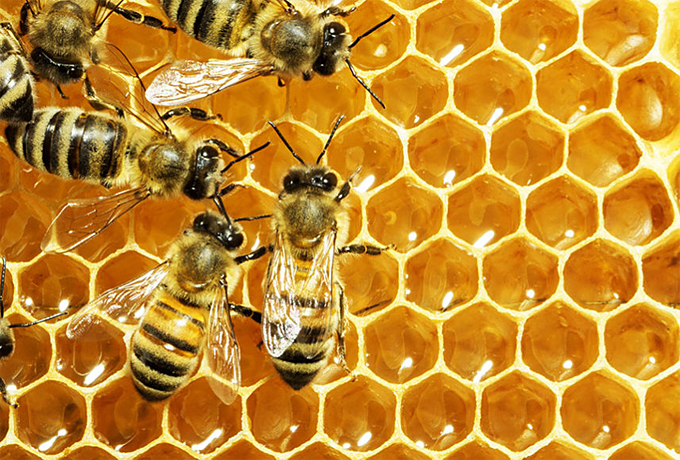
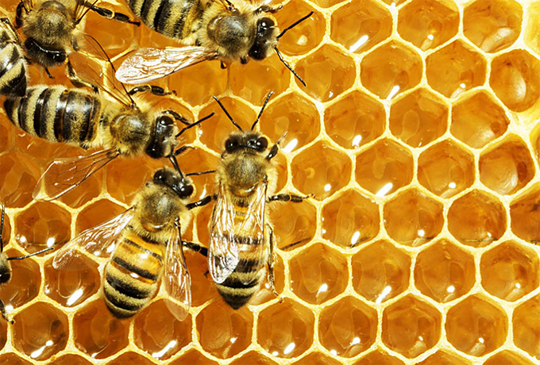

A dolgozó méhek a virágok nektárjából és a levél- és pajzstetvek által kiválasztott mézharmatból gyűjtik a méz alapanyagát az előgyomrukba
Az előgyomorban a garatmirigy váladékával különböző enzimekkel keveredve vegyileg alakítják át.
A kialakult híg, magas víztartalmú mézet a kaptár hatszögletű viaszsejtjeiben tartalék táplálékként raktározzák el.
A kaptárban dolgozó méhek a szárnyukkal keltett légárammal párologtatják el a felesleges vizet, s teszik sűrűbbé, tartósabbá a mézet, vagyis itt érlelik, besűrítik, végül lefedik, lepecsételik.
 
